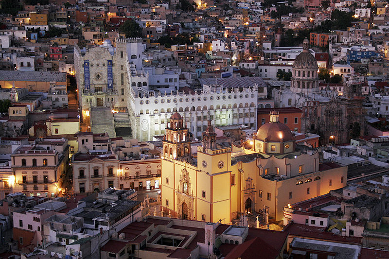

Guanajuato es uno de los treinta y un estados que, junto con la Ciudad de México, forman México.67 Su capital es la Ciudad de Guanajuato. Se divide administrativamente en 46 municipios. Está ubicado en la región centronorte del país, limitando al norte con Zacatecas y San Luis Potosí, al este con Querétaro, al sur con Michoacán y al oeste con Jalisco. Con 30 607 km² de superficie, representa el 1.6 % del total del territorio nacional, siendo el 22º en extensión. Con 5 854 915 habs. en 2015 es la sexta entidad más poblada —por detrás del Estado de México, Ciudad de México, Veracruz, Jalisco y Puebla— y con 179.25 hab/km², la sexta más densamente poblada, por detrás de la Ciudad de México, Estado de México, Morelos, Tlaxcala y Aguascalientes. Fue fundado el 20 de diciembre de 1823.

La trascendencia histórica del estado en el contexto nacional, reside en la serie de acontecimientos sociopolíticos y procesos económicos en los cuales este territorio tuvo un rol determinante. Por mencionar algunos pueden citarse: la pujanza económica que detonó esta región en la Nueva España gracias a la minería; ser la cuna de la independencia nacional y escenario de sus primeras batallas; el papel protagónico de su agricultura durante el Porfiriato, que le valió el sobrenombre de Granero de la república; lugar de definición de la última etapa de lucha armada en la Revolución Mexicana; y sitio de nacimiento de múltiples personalidades de la vida política, militar, social, artística y cultural que han alcanzado relevancia nacional e internacional.
